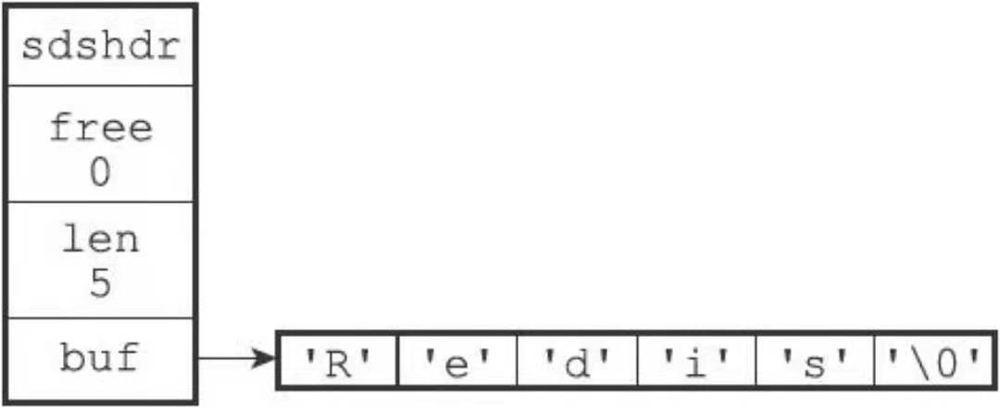
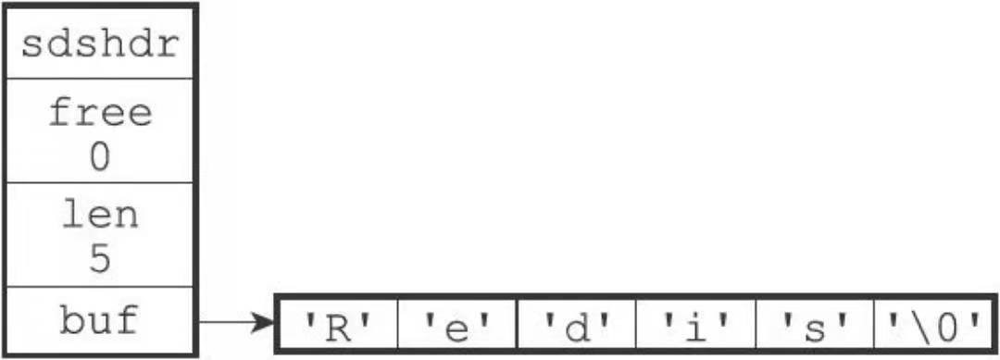
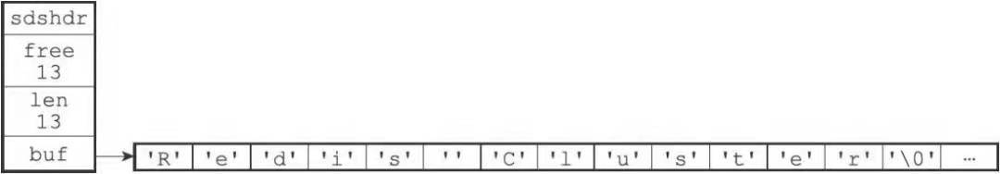
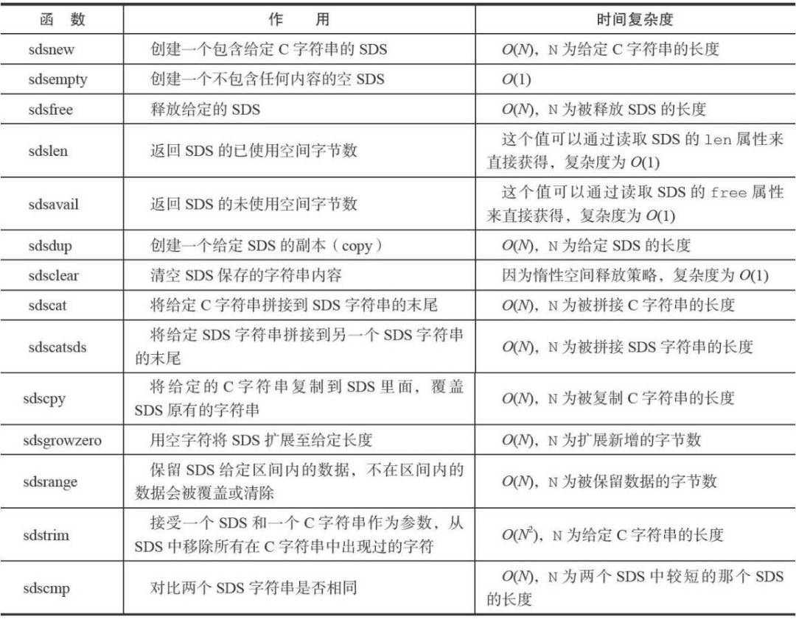

Redis底层数据结构(SDS动态字符串)
简单动态字符串（SDS）
简单动态字符串（simple dynamic string, SDS) 是 Redis 实现的一个用于保存字符串的数据结构，Redis 没有使用C 语言传统的字符串表示。
1 | |
定义
1 | |
SDS示例：

- free为0表示这个SDS没有分配任何未使用空间
- len为5表示这个SDS保存了一个长度为5的字符串
SDS与C字符串的区别
常数复杂度获取字符串长度
C语言要获取字符串长度的时间复杂度是O(N)，本身并没有像SDS结构中的len来记录长度。我们要知道字符串的长度需要调用strlen函数进行循环遍历，而SDS中因为有len的存在获取字符串长度的时间复杂度是O(1)。
杜绝缓冲区溢出
字符串长度的复杂度高之外，C语言记录自身长度带来的另一个问题就是容易造成缓冲区溢出。举个例子：strcat函数可以将一个字符串内容拼接在另一个字符串的末尾：
char *strcat(char *dest, const char *src)
函数执行的前提是已经为dest分配了足够的长度来容纳src，否则就会出现缓冲区溢出。
SDS是如何杜绝缓冲区溢出的？
在sdshdr中定义的free排上了用场，这里调用的是sdscat函数。当我们执行拼接前首先查看free是否大于等于src如果相等执行函数操作，当free可分配空间不足时候sdscat就会先扩展SDS的空间，然后才执行拼接操作。
例如，如果我们执行：
sdscat(s,” Cluster”);
拼接之前:

执行sdscat之后:

可以看到确实扩容了，但是不单是len变成了13连同free的值也变成了13，这个不是bug也不是巧合而是和Redis的分配策略有关。
减少修改字符串带来的内存重分配次数
C语言对于包含N个字符串的底层实现总是一个N+1个字符长的数组(保存空字符)。因为C字符串的长度和底层长度存在关联性所有每一次增长或减少字符串时候总是进行一次内存重新分配操作：
- 进行增长操作时候需要先扩容，否则会产生缓冲区溢出
- 进行截断操作时候需要进行内存释放，否则会发生内存泄漏
内存重新分配涉及复杂的算法，可能需要执行系统调用，所以通常是一个十分耗时的操作
SDS的做法：实现了空间预分配和惰性空间释放
空间预分配：当扩展后字符串不足1M那么就会扩展空闲空间free和字符串长度len一样多的空间，如果超过了1M那么就会分配1M的free空间。这使得从先前的最少分配N次空间提升到了最多N次分配
惰性空间释放：惰性空间释放用于优化 SDS 的字符串缩短操作，当 SDS API 需要缩短 SDS 保存的字符串长度时，不立即使用内存重分配回收，而是使用 free 记录这些字节的数量。不释放多出来的字节空间，如果这时候对 SDS 进行增长操作，这些未使用空间就可以使用。（redis内部头淘汰机制内存不够时会将这些未使用的空间回收）
二进制安全
C字符串必须符合某种编码（比如ASCII），并且除了末尾之外不能包含空字符，这些限制使得C字符串只能保存文本数据，SDS没有这种限制在Redis不是buf数组来保存字符，而是用它来保存一系列二进制数据 。通过使用二进制安全的SD不仅使得Redis可以保存文本数据，还可以保存其他的任何数据。
总结
Redis 使用 C 字符串作为字面量，在大多数情况下，使用 SDS (简单动态字符串) 作为字符串表示，还有对比了 C 字符串与 SDS 的区别，并指出 SDS 的优势等。SDS兼容部分C字符串函数
下面附上SDS的主要操作API

本博客所有文章除特别声明外，均采用 CC BY-SA 4.0 协议 ，转载请注明出处！